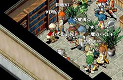
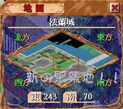
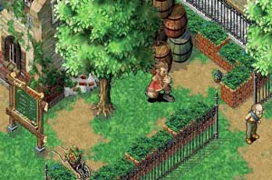
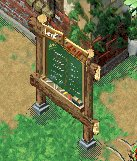

鄰近 城內東醫傳送點 ，
鄰近 城內東醫傳送點 ，
傳送點的下一站便是 寵物店城內傳送點 ，
要到 城堡內的各村傳送石 或是通往 魔弓新城的連接通道 更加方便快捷。
若要步行到東醫或是銀行也只不過是需要數十秒！
日後出入法蘭城各地方就更方便了。
| ◇ 03/03/2003 (星期一) ◇ |
| ＃香港分割，GOR聚集點原香港Ⅶ改為「金牛Ⅳ」＃ |

流浪族G.O.R舊的聚集地『香港七銀行』在繁忙時間時，
往往因人流過多導致出現濟迫的情況產生。
所以，經族內各高級幹部互相相討過後，現決定遷移新的聚集地。

新的聚集地位於 香港七 ，
法蘭城 東邊冒險旅館旁(240,70) 的一塊空地。

新聚集地地方寧靜、優雅，
又接近東醫，適合各族員聚集、聊天、掛網、開攤買賣。
鄰近 城內東醫傳送點 ，
傳送點的下一站便是 寵物店城內傳送點 ，
要到 城堡內的各村傳送石 或是通往 魔弓新城的連接通道 更加方便快捷。
若要步行到東醫或是銀行也只不過是需要數十秒！
日後出入法蘭城各地方就更方便了。

另外，
新的聚集地旁附設 買賣留言板 。
雖說是 買賣留言板 ，
但因 香港七 不是 貿易城市 ，
因此各族員可將此板當作一般的留言板使用。
把重要事情、分享之事留言在板上，
也方便供其他玩家留言找本族。
最後，
大家要常來聚集地，互相認識各族員，
也方便了聯絡。
日後不論找人打王、掛網、聊天，
也要來新的聚集地喔！
 流浪族特別公告_002
流浪族特別公告_002
03/03/2003